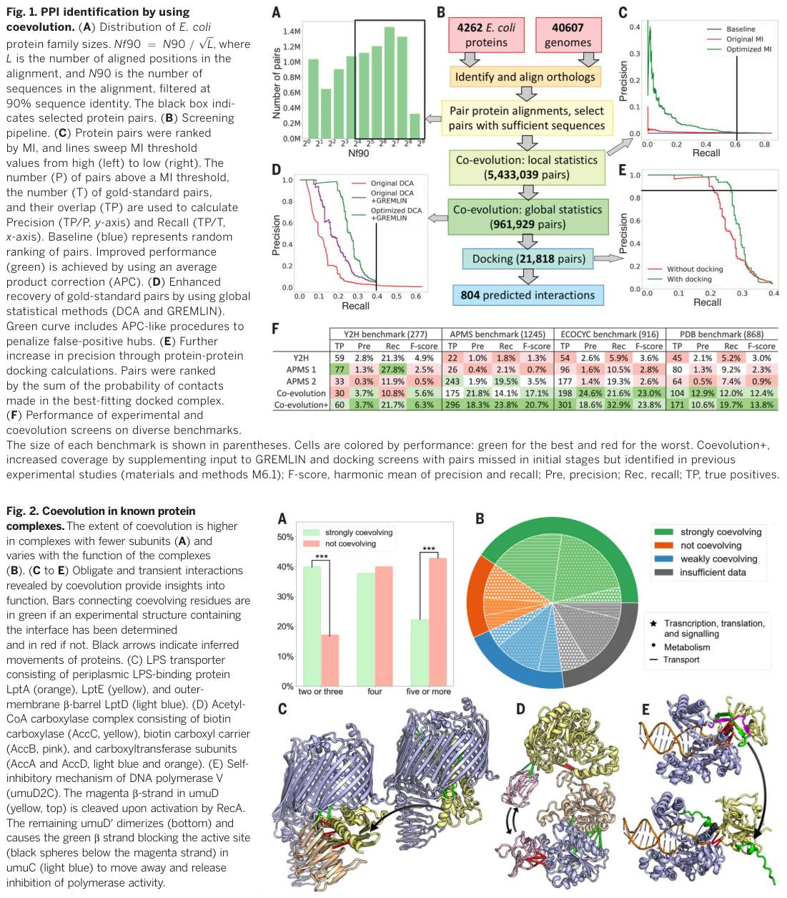
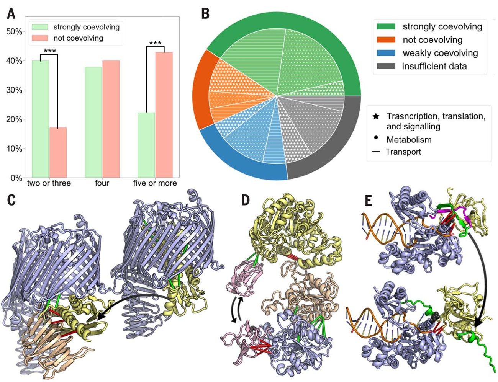
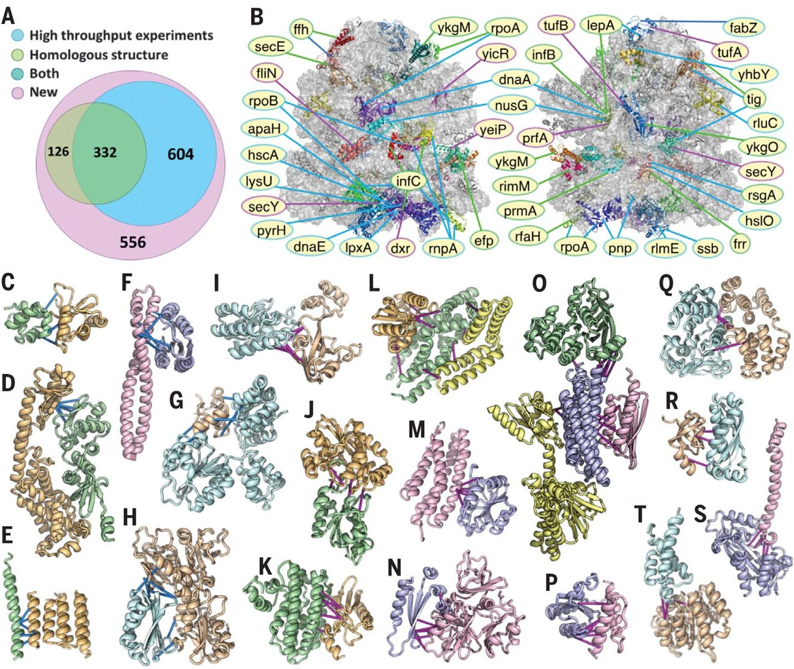
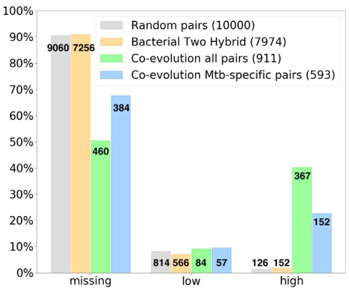

Protein interaction networks revealed by proteome coevolution
Abstract
Predicting protein pairs Biological function is driven by interaction between proteins. High-throughput experimental techniques have provided large datasets of protein interactions in several organisms; however, much combinatorial space remains uncharted. Cong et al. predict protein interfaces by identifying coevolving residues in aligned protein sequences (see the Perspective by Vajda and Emili). In comparison with gold-standard and negative control sets, they show that the accuracy is higher than for proteome-wide two-hybrid and mass spectrometry screens. The approach predicts 1618 protein interactions in Escherichia coli , 682 of which were unanticipated, and 911 interacting pairs in Mycobacterium tuberculosis , most of which had not been previously described. With an expected false-positive rate of between 10 and 20%, the predicted interactions and networks provide an excellent starting point for further study. Science , this issue p. 185 ; see also p. 120
C
oevolution-based prediction of interacting residues from aligned protein sequences has enabled considerable progress in predicting the structures of monomeric proteins (1-3) and complexes of proteins known to interact (4-7). However, using coevolution to identify previously uncharacterized protein-protein inter-actions (PPIs) over the whole proteome, which requires fishing out the 0.1% of pairs (8) that interact among the vast majority of noninteracting pairs, remains a formidable task (9,10). Determining the extent of coevolution between residues in two different protein families requires pairing each protein in one family with its partner in the other (7,11). This pairing is not straightforward if either family includes multiple paralogues with different functions and partners in a species; previous studies have thus been largely limited to proteins encoded on the same operon (4-7). These difficulties, and the complexity of working with millions of protein pairs, have prevented coevolution-based approaches from being used to systematically identify PPIs on the whole-proteome scale.
To systematically investigate coevolution in the E. coli proteome (Fig. 1B), we began by using the "reciprocal best hit" criterion (12,13) to identify, when possible, putative orthologs for each of the 4262 E. coli proteins in each of the 40,607 representative bacterial proteomes. We aligned these orthologs (14,15) and constructed paired alignments for all 4262 × (4262 -1) ÷ 2 = 9,080,191 protein pairs. The alignments for 5,433,039 pairs contain sufficient sequence information (Nf 90 >¼ 16, see Fig. 1 legend) to assess coevolution (Fig. 1A).

Coevolution detection methods that eliminate transitivity using global statistical models, which consider all residue pairs simultaneously (16)(17)(18), are too slow for datasets of this size. Instead, we used the residue-residue mutual information MI; P aa1;aa2
Pðaa1; aa2Þ Á log Pðaa1; aa2Þ Pðaa1ÞÁPðaa2Þ as an initial screen (19); this is a local statistical model because each residue pair is considered independently. We used the maximum value of the MI over all residue pairs as a metric for protein-protein coevolution (rather than an average or sum over the most strongly coevolving residue pairs) to reduce the impact of lack of independence due to transitivity. We hypothesized that the most strongly coevolving protein pairs would likely physically interact. We assessed this by constructing a "gold-standard" PPI set from E. coli protein complexes (20) in the Protein Data Bank (PDB) (table S1) and a negative control set consisting of protein pairs drawn from two different complexes (table S2), with no experimental data (21)(22)(23) indicating inter-actions between them (we cannot be sure that all such pairs do not interact, but the fraction is likely to be small). Selection of coevolving pairs with high MI increases the frequency of physically interacting pairs compared with negative control pairs (Fig. 1C). Considerably better discrimination (Fig. 1C, green versus red curves) of the positive from the negative control could be achieved by downweighting proteins that appear to coevolve with many others through an average product correction (APC) (19).
We selected the top 961,929 pairs (to the left of the black vertical line in Fig. 1C) for further analysis using the global methods direct coupling analysis (DCA) (6) and generative regularized models of proteins (GREMLIN) (16). These methods improved discrimination of the gold-standard set with DCA followed by GREMLIN performing better than DCA alone (Fig. 1D, purple versus red curves); still better discrim-ination was achieved by again penalizing residues and proteins that coevolve with many others (Fig. 1D, green versus purple curves). Choosing a threshold balancing sensitivity and specificity, we selected the top 21,818 pairs (to the left of the black vertical line in Fig. 1D). As a final screen, three-dimensional models for proteins in each pair were docked together (24), guided by distance constraints between coevolving residue pairs, and we selected 804 protein pairs that exhibited the strongest coevolution across the docked interface (Fig. 1E and materials and methods M7.2). With each increasingly stringent screen step, the number of negative control pairs is reduced greatly, whereas the recovery of the gold-standard pairs decreases only slightly (table S3). We investigated whether deep learning methods (25) trained on contacts in monomeric proteins could provide better discrimination but found they did not improve performance (fig. S1; contacts are overpredicted as the prior probability of residue-residue inter-actions between proteins is far lower than within proteins); such methods likely will require direct training on PPIs to be useful for this purpose.
We compared the accuracy of the coevolution-based interaction predictions with those of inter-actions inferred from high-throughput yeast two hybrid (Y2H) (8) and affinity purificationmass spectrometry (APMS) (26, 27) over several benchmark sets. One benchmark is from the Y2H study, one is from one of the two APMS ( 26) studies (the other APMS study did not contain a benchmark), and two additional benchmarks were derived from x-ray and cryo-electron microscopy complexes of E. coli proteins in the PDB and from gold-standard complexes in Ecocyc (20) (tables S4 to S7). We evaluate the performance of each method on each benchmark using precision (TP/P, where TP is the number of true inter-actions that are correctly predicted, and P is the number of predicted inter-actions) and recall (TP/T, where T is the number of true inter-actions in a benchmark). Our coevolution screen outperforms the experimental methods (Fig. 1F) in both precision and recall except for a worse recall on the Y2H benchmark-this includes more transient inter-actions that are not well conserved among many species and hence are harder to detect by using coevolution methods. The interacting partners predicted by coevolution, like those in structurally confirmed complexes, have more closely related functions (fig. S2) than those identified in the large-scale experiments. The fast coevolution detection methods used in the early, higherthroughput steps in our protocol may miss inter-actions that can be recognized by the slower but more sensitive methods in later steps. Therefore, we input protein pairs reported to interact in experimental studies or on the same operon directly into the GREMLIN and docking screens, resulting in 814 additional pairs (1618 in total, table S8) that pass our coevolution and docking thresholds (coevolution+ protocol).
We observed strong coevolution (predicted interacting probability > 0.7) across the interfaces of 40% of the gold-standard PPI set but little coevolution (interacting probability < 0.2) for 20% of interfaces in this set. To understand why there was such a wide range of coevolution across known protein-protein interfaces, we compared the properties of strongly coevolving protein complexes with those showing little coevolution (table S9). Overall, coevolution across interfaces in binary complexes (two components) was stronger than that in larger complexes (Fig. 2A); in large assemblies with interfaces between several protein pairs, any single interface may be less critical for complex formation, reducing the extent of coevolution. Coevolution was also lower in complexes that contain nucleic acids (Fig. 2B): the protein-nucleic acid inter-actions may contribute to the stability of the complex along with the PPIs. Less coevolution was also observed for small and low-affinity interfaces (fig. S3) and for interfaces exhibiting more variation between different species (fig. S4). On the basis of these observations, we expect that the large set of strongly coevolving protein pairs we have identified includes most of the higheraffinity binary complexes in the core prokaryotic proteome (we are not able to observe coevolution between proteins present in small numbers of species) but likely is quite incomplete in the coverage for larger protein and proteinnucleic acid assemblies.

It is instructive to consider three examples in which the interfaces revealed by coevolution are incompatible with a single static complex, suggesting dynamic inter-actions important for function. We observed coevolution between the periplasmic lipopolysaccharide (LPS)-binding subunits LptA and LptE and between the Nterminal tail of LptE and the outer-membrane b-barrel LptD in the LPS transporter. LptE sits inside LptD in the cocrystal structure (PDB ID: 4RHB), where it cannot bind LptA (Fig. 2C). The coevolution data suggest a handoff mechanism: LptE dips into the periplasmic space to accept LPS from LptA, maintaining interaction with LptD through the N terminus, and then delivers LPS to the extracellular space by transitioning to the conformation seen in the crystal structure.
In addition to the experimentally determined interfaces between the biotin carboxylase subunit AccC and the biotin carboxyl carrier AccB (PDB ID: 4HR7) and between the carboxyltransferase subunits AccA and AccD (PDB ID: 2F9Y) in the acetyl-coenzyme A (CoA) carboxylase complex, we observed coevolution between AccC and AccD and between AccB and AccA (Fig. 2D). These inter-actions suggest a dynamic model in which AccB shuttles biotin carboxyl from AccC (which produces it) to AccA-AccD complex, which then transfers the carboxyl group from biotin to the substrate acetyl. For polymerase V (UmuD2C), coevolution data predict a model of the complex between UmuD and UmuC that can explain the self-inhibition mechanism (Fig. 2E). In the predicted UmuD-UmuC complex, the active site of UmuC is obstructed by a segment of UmuD that strongly coevolves with residues around the active site. After cleavage of the 24 N-terminal amino acids of UmuD to generate UmuD′, which then dimerizes (28), the active site-blocking segment changes conformation and relieves the inhibition. These examples show that coevolution can suggest transient inter-actions difficult to capture by using conventional structural biology methods.
3A, 936 (332 + 604) of the strongly coevolving pairs have been reported previously. Because the false-positive rate is non-negligible (10 to 20% overall, see materials and methods M8), we searched for additional supporting data for each of the remaining 682 (1618 -936) new predictions. We found homologous PDB templates consistent with coevolution data for 126 pairs, nearby genomic locations for an additional 143 pairs, and an additional 231 pairs with related functions and/or particularly strong coevolution across the docked interface (fig. S5 and table S10). The predicted PPIs include both previously unknown complexes and previously uncharacterized components of known complexes (table S11). The ribosome provides a notable illustration of the latter. We find considerable coevolution between core ribosomal proteins and other components, extending over the full surface of the assembly (Fig. 3B and table S15). Some of these PPIs have been structurally characterized (green bars) or inferred in high-throughput experiments (blue bars), whereas others to our knowledge have not been reported previously (magenta bars).

Our coevolution-guided docking models (Fig. 3, C to T) reveal interfaces that may provide new insights into biological processes: for example, how the type II toxin MqsR and antitoxin MqsA intermesh, enabling antibiotic-resistant cells to dominate in a bacteria community (Fig. 3C table S15). (C and D) Previously unknown interfaces extending those in crystal structures. (E to H) inter-actions supported by large-scale experiments. (I to T) Previously unidentified inter-actions. (C) Coevolution suggests that both the C-(shown) and N-terminal (not shown, in cocrystal) domains of antitoxin MqsA interact with toxin MqsR, possibly forming a higher-order complex. (D) DNA mismatch repair proteins MutS and MutL (C terminus). (E) Sec translocon accessory protein YajC and membrane protein insertase YidC. (F) Cell division protein FtsX and murein hydrolase activator EnvC. (G) DNA polymerase III subunit delta and ferredoxin YfhL. (H) Protein YciI and riboflavin biosynthesis protein RibD. (I) Thioesterase TesA and protein YbbP. (J) tRNA methyltransferase TrmD and tRNA sulfurtransferase ThiI. (K) 1,2-phenylacetyl-CoA epoxidase, subunits C and D. (L) RNA polymerase sigma factor FliA (green), flagellar biosynthetic protein FlhB (orange), and secretion chaperone FliS (yellow). (M) D-ribose pyranase RbsD and sigma D regulator Rsd. (N) Cell division topological specificity factor MinE and tRNA-modifying protein YgfZ. (O) Phosphate transporter ATPase PstB (green), phosphate transporter accessory protein PhoU (blue), phosphate regulon sensor protein PhoR (yellow), and ribosome hibernation promoting factor Hpf (pink). (P) Transcriptional factor BolA and ribosome modulation factor Rmf. (Q) LPS exporter ATPase LptB and protein YbbN. (R) Membrane protein quality-control factor QmcA and protein YbbJ. (S) Nucleoside triphosphatase RdgB and DNA utilization protein HofN. (T) Macrodomain Ter protein MatP and protein YjjV. RESEARCH | REPORT Downloaded from https://www.science.org at Massachusetts Institute of Technology on July 26, 2026 how MutS cooperates with MutL to repair DNA mismatches (Fig. 3D); and how the expression, folding, and secretion of flagellar proteins is controlled by the dedicated sigma factor FliA and regulatory proteins such as FlhB (Fig. 3L). Other predicted inter-actions suggest functional roles for poorly characterized proteins. For example, we predict that uncharacterized proteins YfhL (Fig. 3G), YbbJ (Fig. 3R), and YjjV (Fig. 3T) are involved in regulation of DNA replication, membrane protein quality control, and chromosome segregation based on their coevolution with DNA polymerase III subunit delta, membrane protein quality-control factor QmcA, and mac-rodomain Ter protein MatP, respectively. Particularly interesting cases involve cross-talk between different pathways (Fig. 3, F and M to P). For example, some metabolic enzymes (Fig. 3M) and transporters (Fig. 3O) coevolve with transcriptional and translational regulators (ribosome hibernation factor and sigma D regulator) involved in the transition from growth to stationary phase; these may link the metabolic status of the cell with the transition to stationary phase.
Beyond the binary inter-actions considered above, we observe extended networks of mutually coevolving proteins (Fig. 4). Some of these in-volve proteins with similar biochemical functions -for example, networks of sequentially acting enzymes (fig. S6) and of adenosine triphosphate (ATP)-binding cassette (ABC) transporters (fig. S7). Given the number of components and range of functions, many of the networks are unlikely to form single complexes; rather, they may form multiple reconfiguring complexes involved in more complex functions (fig. S8). Some of the larger networks involve proteins mediating the same biological processes, such as transcriptional regulation (Fig. 4A), outer-membrane integrity maintenance (Fig. 4B), and flagella biosynthesis and assembly (Fig. 4F). Other networks connect different processes and perhaps enable bacteria to modulate DNA replication (Fig. 4D), or transcription and translation (Fig. 4C) on the basis of the internal and external environment-for example, under stress conditions (Fig. 4E).

We investigated the applicability of coevolution-based interaction prediction to Mycobacterium tuberculosis, a human pathogen evolutionarily distant from E. coli: only 41% of M. tuberculosis proteins have clear E. coli homologs (BLAST e-value < 10 -5 ). Using the protocol developed for E. coli, we inferred 911 PPIs in M. tuberculosis with an expected precision of 83%. Of the predicted PPIs, 662 do not have E. coli orthologs, and 593 do not have E. coli homologs (BLAST e-value < 10 -5 ). The majority (95%, fig. S9) of these predicted PPIs have not been previously described, because of the limited experimental characterization of M. tuberculosis proteins (for E. coli, 42% have not been characterized). Forty percent of the predicted interacting partners are functionally related according to the STRING (functional protein networks) database (23) (Fig. 5); in comparison, the agreement between pairs identified in the bacterial twohybrid screen (29) and functional networks in STRING is almost as low as that of randomly selected pairs and much lower than Y2H or APMS studies on E. coli (fig. S2), reflecting the challenge of carrying out experimental screens on nonmodel organisms (poor protein expression, etc.). In contrast, our coevolution screen is likely as accurate for M. tuberculosis as it is for E. coli. We provide a full list of the predicted PPIs in table S12. Among these predictions, 293 link poorly characterized proteins to partners with well-annotated function (table S13), and 70 involve proteins that were suggested to contribute to the virulence of M. tuberculosis (table S14) (30). We expect this list to be useful for therapeutic target identification and deciphering the hard-to-study biology of M. tuberculosis.
The large number of previously unpredicted binary inter-actions, networks, and protein complex structures described here is notable because no new experiments were required; these results instead leverage ongoing genome sequencing efforts. Despite the inevitable errors in such large-scale studies, our benchmarking suggests a considerably higher accuracy than previous large-scale experimental screens and, hence, a sound starting point for detailed experimental testing by biochemistry and mutagenesis. It will Functional relatedness was assessed by using the M. tuberculosis functional network in the STRING database (high: STRING combined score ≥ 0.4, missing: not in the STRING database). A considerable fraction (40%) of coevolution-based predictions (green) involve partners that are predicted to be functionally related, whereas a much lower fraction (orange, 2.0%) of PPIs identified in a previous experimental screen involves functionally related partners, almost as low (gray, 1.3%) as randomly selected pairs. The 384 predicted PPIs involving partners lacking homologs in E. coli and without STRING annotations (blue bar on left) are likely to be of most interest to M. tuberculosis researchers. Mtb, M. tuberculosis.
be particularly interesting to follow up on inter-actions that shed light on the function of previously uncharacterized proteins and to investigate the suggested couplings between different biological processes such as metabolism and translation regulation. The coevolution screen can be carried out on organisms like M. tuberculosis, for which experimental PPI screens are difficult or intractable. By carrying out the analysis on many organisms, it should be possible to follow the evolutionary dynamics of PPI networks. The use of coevolution to unravel interaction networks in the core eukaryotic proteome will likely require improved decoupling of coevolutionary and phylogenetic contributions to residue-residue covariation and more genome sequence data on less complex eukaryotes spanning a wide evolutionary distance. Deep learning methods, which have greatly improved the contact prediction in individual proteins by considering the full spectrum of amino acid substitutions (3, 11, 25) rather than just the overall magnitude of the covariation, have the potential to more accurately predict contacts across interfaces with fewer sequences and further facilitate the identification of PPIs in eukaryotes.
Science, this issue p. 185; see also p. 120 View the article online https://www.science.org/doi/10.1126/science.aaw6718 Permissions https://www.science.org/help/reprints-and-permissions Use of this article is subject to the Terms of service Science (ISSN 1095-9203) is published by the American Association for the Advancement of Science. 1200 New York Avenue NW, Washington, DC 20005. The title Science is a registered trademark of AAAS
References
- D. S. Marks et al ., PLOS ONE 6 , e28766 (2011)
- S. Ovchinnikov et al ., Science 355 , 294 – 298 (2017)
- Ovchinnikov S. Science 2017
- Wang S, Sun S, Li Z, Zhang R, Xu J. PLOS Comput. Biol 2017
- Ovchinnikov S, Kamisetty H, Baker D. 2014
- Weigt M, White R, Szurmant H, Hoch J, Hwa T. Proc. Natl. Acad. Sci. U.S.A 2009
- Bitbol A, Dwyer R, Colwell L, Wingreen N. Proc. Natl. Acad. Sci. U.S.A 2016
- Rajagopala S. Nat. Biotechnol 2014
- Hashemifar S, Neyshabur B, Khan A, Xu J. Bioinformatics 2018
- Bitbol A. PLOS Comput. Biol 2018
- Zeng H. Nucleic Acids Res 2018
- Wall D, Fraser H, Hirsh A. Bioinformatics 2003
- Altschul S, Gish W, Miller W, Myers E, Lipman D. J. Mol. Biol 1990
- Eddy S. PLOS Comput. Biol 2011
- Sievers F. Mol. Syst. Biol 2011
- Kamisetty H, Ovchinnikov S, Baker D. Proc. Natl. Acad. Sci. U.S.A 2013
- Marks D, Hopf T, Sander C. Nat. Biotechnol 2012
- Morcos F. Proc. Natl. Acad. Sci. U.S.A 2011
- Dunn S, Wahl L, Gloor G. Bioinformatics 2008
- Keseler I. Nucleic Acids Res 2011
- Orchard S. Nucleic Acids Res 2014
- Xenarios I. Nucleic Acids Res 2000
- Szklarczyk D. Nucleic Acids Res 2015
- Vakser I. Protein Eng 1995
- Jones D, Kandathil S. Bioinformatics 2018
- Babu M. Nat. Biotechnol 2018
- Jiang Q, Karata K, Woodgate R, Cox M, Goodman M. Nature 2009
- Q. Jiang, K. Karata, R. Woodgate, M. M. Cox, M. F. Goodman, Nature 460 , 359 – 363 (2009)
- Wang Y. J. Proteome Res 2010
- Liu B, Zheng D, Jin Q, Chen L, Yang J. Nucleic Acids Res 2019